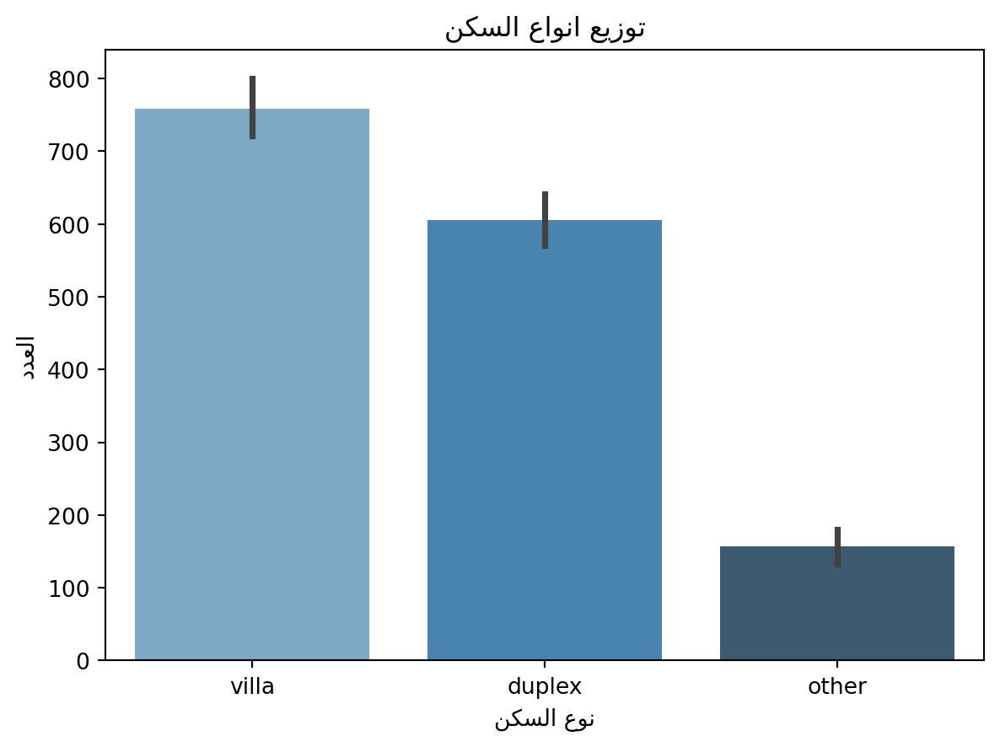

As we can see in the @corr, we can observe that there are 4 major features that are considered higly correlated with price, these are:
driver_room
pool
ac
basement
Interesting…
How about a deep look at each feature with the price:
Code
# see how great the above 4 feature affect the price# creating the canvasfig, ((ax1,ax2), (ax3,ax4)) = plt.subplots(2,2, figsize=(15,10))# plotting ax1 data: `driver_room`ax1 = sns.barplot(ax=ax1, y=data["price"], x=data["driver_room"] ,data=data)# configure the plotax1.set_title("Effect of Driver's room on price")ax1.set_xlabel("")labels = [item.get_text() for item in ax1.get_xticklabels()]labels[0] ="Without Driver Room"labels[1] ="With Driver Room"ax1.set_xticklabels(labels)ax1.set_ylabel("Price")# plotting ax2 data: `ac`ax2 = sns.barplot(ax=ax2, y=data["price"], x=data["ac"] ,data=data)# configure the plotax2.set_title("Effect of AC on price")ax2.set_xlabel("")labels = [item.get_text() for item in ax2.get_xticklabels()]labels[0] ="Without AC"labels[1] ="With AC"ax2.set_xticklabels(labels)ax2.set_ylabel("Price")# plotting ax3 data: `pool`ax3 = sns.barplot(ax=ax3, y=data["price"], x=data["pool"] ,data=data)# configure the plotax3.set_title("Effect of Pool on price")ax3.set_xlabel("")labels = [item.get_text() for item in ax3.get_xticklabels()]labels[0] ="Without Pool"labels[1] ="With Pool"ax3.set_xticklabels(labels)ax3.set_ylabel("Price")# plotting ax4 data: `basement`ax4 = sns.barplot(ax=ax4,y=data["price"], x=data["basement"] ,data=data)# configure the plotax4.set_title("Effect of Basement on price")ax4.set_xlabel("")labels = [item.get_text() for item in ax4.get_xticklabels()]labels[0] ="Without Basement"labels[1] ="With Basement"ax4.set_xticklabels(labels)ax4.set_ylabel("Price");
Visualizing the effect of the 4 features on the price
We can conculde the following based on the @featureplots:
On average, villas with a basement room tend to be showcased at a higher rent rate.
2.2.2 Which has a higher impact on the rent prices: location or features?
Code
# find the price range in the 4 major cities# create the canvafig, ax = plt.subplots(figsize=(8,5))# plot the datasns.barplot(ax=ax ,y ="price", x=plot_arabic(data["city"]), data=data)# configure the plot ax.set_title(plot_arabic(pd.Series("متوسط أسعار الأجار حسب المدينة")))ax.set_ylabel(plot_arabic(pd.Series("الأسعار")))ax.set_xlabel(plot_arabic(pd.Series("المدن")));
Average price in each of the major cities
2.3 Lana
2.3.1 what frontage appears the most and what is the most desired
Code
plt.figure(figsize=(10,8))plt.hist(x= plot_arabic(data['front']) , bins =20)plt.show()#insert price and frontage corr code

2.3.2 what the ratio of bedrooms and living rooms to bathrooms and does it reflect the market demand
Code
ratio = data[['bedrooms', 'bathrooms']].apply(lambda data: (data['bedrooms']/data['bathrooms']), axis=1)ratio = ratio.mean()ratio